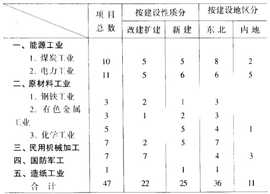
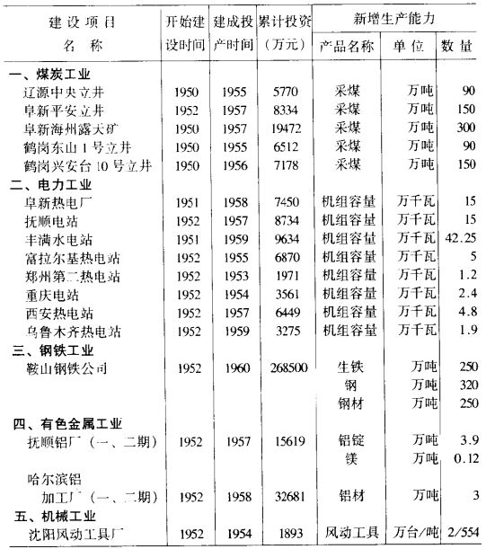

二、援建重点项目
可以说，在恢复时期，中国现代工业基本建设的核心就是苏联帮助援建的重点项目，即人们常提到的156项引进工程中的第一批50个项目。1950年2月中苏领导人会谈的结果是苏联政府答应帮助中国援建恢复经济急需的煤炭、电力、钢铁、有色金属、化工、机械和军工部门的50个重点项目。在执行过程中，因情况变化撤消了1个项目，合并了2个项目，实际建设项目为47个。具体情况如下表：
表一 第一批苏联援建项目情况

表中的3项，即能源工业项目21个，占44.7%，改建和扩建项目22个，占46.8%，东北建设项目36个，占76.6%，充分说明这一援建工程带有为工业化打基础和经济恢复的性质。随着设计工作的进展和朝鲜战局趋向缓和，这些项目在恢复时期内陆续开始破土动工。从成套设备进口的完成情况看，有些项目是分阶段建成投产的。按国家统计局1953年3月11日的统计报告，1950-1953年中苏共签订技术成套设备进口合同68394万卢布，3年累计实际进口46974万卢布，完成合同68.7%。在上述企业中，已经全部完成进口合同的有抚顺电站（一期）、阜新电站（一期）、西安电站（一期）、郑州电站、乌鲁木齐电站、丰满水电站（一、二期）、重庆电站、沈阳风动工具厂等8个项目，完成80%以上的有鞍山钢铁公司、抚顺铝厂（一期）、哈尔滨量具刃具厂、沈阳机械一厂、富拉尔基电站（一期）、太原电站（一期）、大连化工厂等。 所以，尽管这些重点项目完全建成投产尚待时日，但与恢复时期全部新增固定资产金额和生产能力数量比较，以下重点项目建设的基本情况（如表二所示）足以说明1950-1952年苏联援建的项目对于新中国国民经济恢复以及未来工业化建设的重大意义。
表二 恢复时期苏联援建的部分重点项目基本情况

1950-1952年全国固定资产实现新增金额合计59亿元，能源和原材料主要产品生产能力实现新增：电力22.2万千瓦，煤炭开采1563.7万吨/年，生铁76.4万吨/年，钢锭55.8万吨/年，钢材33.6万吨/年。 而表二所列部分重点项目完全建成后将实现新增固定资产合计达41.39亿元，实现生产能力新增：电力87.55万千瓦，煤炭开采780万吨/年，生铁250万吨/年，钢锭320万吨/年，钢材250万吨/年。苏联援建项目对中国经济发展的作用由此可见一斑。
除此之外，苏联还应中国政府要求援建了一些临时提出的项目。如1951年1月重工业部部长何长工和段子俊、沈鸿受命前往莫斯科谈判由苏联紧急援建中国航空工业的计划。苏联对此十分重视，组成了以维辛斯基为首的七人委员会与中方谈判。经过一个多月的商谈，苏联答应帮助中国迅速建造起年修理能力为3000台发动机和600架飞机的修造厂，当年即大修发动机1500台，飞机300架，而且同意了中方的意见在中国进行设计，并尽快派专家赴华开展工作。考虑到航空工业对中国的紧迫性，苏联援助中国建设航空工业的协议送交斯大林审批后，只用三个小时就批准了。在这个基础上，1951年4月中国政府颁发了《关于航空工业建设的决定》。
在当时的情况下，中国的工业化建设必须也只能依靠苏联的帮助，这一点中国驻苏大使张闻天看得十分透彻。1952年1月16日他给周恩来写信提出，中国今后工业化的方针必须把自力更生同充分依靠与信任苏联的援助密切结合起来。张闻天认为，对于中国今后工业化有决定意义的大型工厂和矿场的建设必须完全依靠与信赖苏联的援助，从初步设计、技术设计、施工详图直到成套设备订货及安装，都应全部地、彻底地采用苏联的计划、装备与专家，只有这样，中国才能从一开始就真正建立起最新式的、最进步的、最现代化的工业工厂。这样的工厂，只要充分依靠与信任苏联的帮助即可最迅速的建立起来，用不着走弯路，用不着摸索又摸索，而且也不会发生乱子。因为苏联同志们有充分的经验，有足够的设备，并且有最可靠的政治保证，在中国革命胜利之后，今后苏联对中国革命的最大的、最有效的援助就在这一方面。张闻天此信引起中共中央极大重视。毛泽东于1952年2月8日批示：“关于工业问题，请陈、李注意随时提到中央会议加以讨论。”中财委党组干事会于2月18日讨论了张闻天的信和有关来电，并制定了相应的措施：一、凡属开办新工厂或在旧厂中改建重要装备而我无改进把握者，均应聘请苏联设计组，而且对于接收定货、保管装备、施工安装、试车运转均需聘请苏联专家或专家组加以协助指导。二、初步设计批准后，凡我不能自制的装备必须依靠苏联供应。三、因今后贸易部进口公司的主要业务是向苏联和新民主主义国家购买工业装备和器材，一切工业部门必须抽出一批熟悉苏联设备和器材的干部及可靠的技术人员给进口公司。四、凡属向苏订购成套装备或订购大量器材的厂矿，必须派出该厂矿的第二负责人带队常驻苏接洽定货、催货。不派重要负责人者不予定货。五、对于重要工厂的设计和定购装备工作，中央财经各部的负责人必须十分重视，必要时必须亲去苏联接洽。六、中央各部及各厂矿所开定单事前必须慎重确定，一经我方商务代表团与苏方签订了议定书之后就不能变更。七、各部门各厂矿经中贸部向苏联提出的定货单的金额及定单中的主要装备必须仍由中财委批准，未得中财委批准不得变更。八、已征得外交部同意加派四个来往于中苏的外交信使专送财经信件，如此等等。中共中央于同年3月7日致电张闻天和各中央局，表示同意报告中提出的意见。
156项工程的第二批项目是伴随中国经济发展一五计划的制定开始的。1952年8-9月，周恩来率政府代表团赴莫斯科与苏联政府商谈即将于1953年开始的第一个五年计划制定和中国工业化建设问题。原则确定之后，政务院财经委员会副主任李富春等继续留下与苏方商谈苏联援助的具体细节，历时8个月。苏联政府对周恩来交付的一五计划重点工业项目逐一进行了极为详细周密的研究，除少数中国自己能办或因地质资源不明和一五计划期间无法上马的项目外，同意满足中国政府的要求，甚至增加了一些应该开办而中方没有考虑到的企业。双方最终确定，在1953-1959年内由苏联援助中国新建和改建91个企业。1953年5月15日，李富春和米高扬分别代表两国政府签订了关于苏联援助中国发展国民经济的协定，其中确定的苏联援建项目为2个钢铁联合企业，各年产钢120-150万吨；8个有色金属企业，年产锡3万吨，铝1.5万吨，钼精矿1万吨，钨精矿3万吨，钒钛精矿13万吨；8个矿井、1个煤炭联合厂，年产煤1990万吨，3个洗煤厂，年产煤450万吨；1个石油炼油厂，年处理原油100万吨；32个机器制造厂，其中年产冶金、矿山、石油设备7.5万吨，金属切削机床3.6万吨，载重汽车6万辆，拖拉机1.5万辆，轴承1000万个；16个动力机器及电力机器制造厂，年产发电机组各为36万千瓦，并能扩大到60万千瓦，以及其他无线电和电气产品；7个化学厂，其中3个化学厂年产氮肥18万吨，合成橡胶1.5万吨；10个火力发电站，年发电量共41.3万千瓦；2个医药工业企业；1个食品工业企业，共91项。同时，还要帮助中国35个国防工业企业完成设计、设备供应，并给予其他各种技术援助。作为偿付，中国则要在1959年以前供应苏联16万吨钨精矿、11万吨锡、3万吨锑、3.5万吨钼精矿、9万吨橡胶，以及相当数量的农副产品。李富春报告说，包括在建的50个项目在内的这141个企业的建成，到1959年中国的工业能力将大大增长，在黑色冶金、有色金属、煤炭、电力、石油、机器制造、动力机械制造和化工方面都将超过现有生产能力一倍以上，中国不仅将有自己的汽车工业和拖拉机工业，钢铁、煤炭、电力和石油等主要工业产品将达到苏联一五计划时的水平，接近或超过日本1937年的水平。
当时，苏联第五个五年计划大纲已经苏共十九大通过，为了帮助中国建设和改建这些企业，苏联必须重新调整计划、调度生产和安排人员。例如，除需派遣大量技术专家来华外，仅国内设计单位就要增加3万人。此外，从选择厂址，搜集设计基础资料，进行设计（苏方承担70-80%），供应设备（苏方承担50-70%），无偿提供技术资料，直到指导建筑安装和开工运行，苏联都将给予全面的援助。
总之，正如周恩来给苏联政府备忘录的回文中所说，苏联政府对于建设和改建中国的91新企业和正在进行中的50个企业的援助以及其他方面对于发展中国经济的种种援助，将使中国人民“逐步地建立起自己的强大的重工业和国防工业，这对于中国工业化和走向社会主义是具有极其重大作用的”。